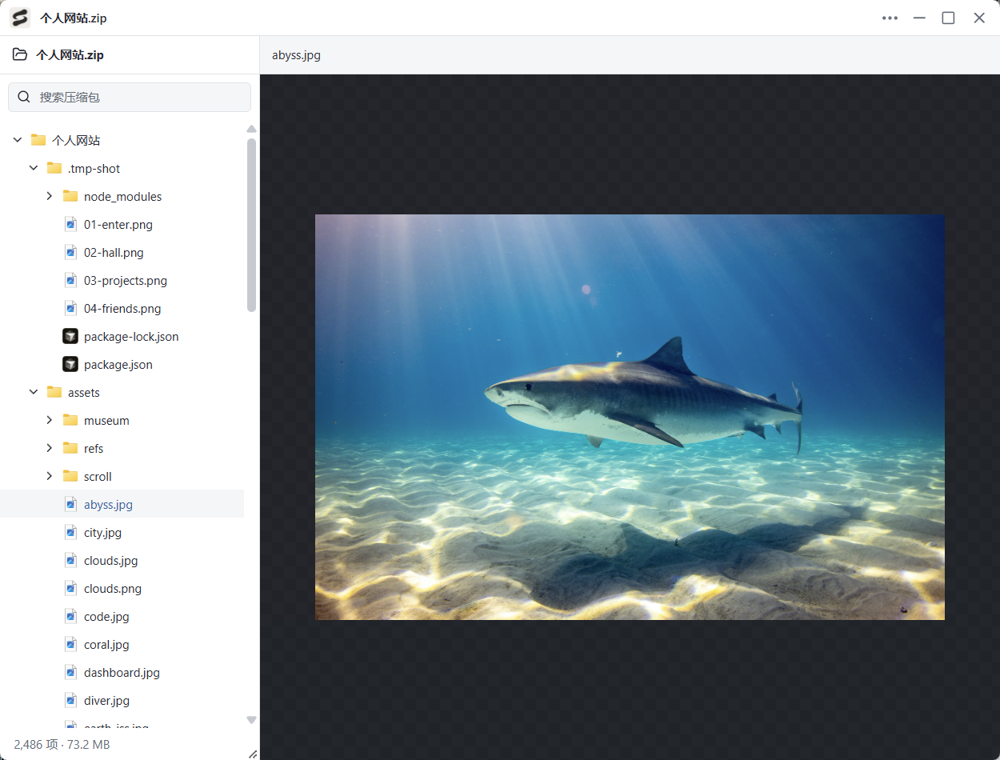

空格，直接预览
Windows 资源管理器、桌面与 macOS Finder 中选中文件，按下空格查看，再按一次返回。
选中文件，轻按空格。文档、图片、代码、压缩包，
都在一个窗口里快速查看，把注意力留给内容本身。
从压缩包里的图片，到文档里的细节，用一个窗口继续浏览。

围绕“看一眼”这件小事，把常用能力放在顺手的位置。
Windows 资源管理器、桌面与 macOS Finder 中选中文件，按下空格查看，再按一次返回。
速度与资源占用优先。PDF 按可见页绘制，ZIP 按需读取，切换或关闭时取消旧的解析任务。
浏览 ZIP、TAR、7Z 等归档的目录层级，打开其中支持的图片、文本与文档，无需先完整解压。
Word / Markdown 大纲、文本搜索、字体字号和缩放。代码高亮，结构化代码支持按条件折叠。
只读预览，不修改原文件，不上传内容。文档脚本与 Office 宏不会执行，Notebook 单元格不会运行。
明暗主题、自定义预览键、可选开机自启动和应用内更新，工具集中在「更多」菜单中。
常见格式随手查看，专业内容也有各自的预览方式。
PDF · Word · Markdown · EPUB · RTF
PNG · SVG · PSD · HEIC · TIFF · RAW
TypeScript · JSON · XML · HTML · Python
ZIP · TAR · 7Z · RAR · ASAR
XLSX · CSV · TSV · ODS · SQLite
STL · OBJ · STEP · 字体 · 音视频
| 文件类别 | 支持的代表格式 / 扩展名 |
|---|---|
| 常见图片 | JPG、JPEG、JFIF、PNG、APNG、GIF、WebP、SVG、BMP、ICO、AVIF |
| TIFF 多页图像 | TIF、TIFF |
| 专业图像 | PSD、PSB、HEIC、HEIF、DDS、EXR、HDR、JP2、J2K、JXL、QOI、TGA、PCX、XCF 等 |
| 相机 RAW | ARW、CR2、CR3、DNG、NEF、NRW、ORF、RAF、RW2、PEF、KDC 等 |
| 图标与矢量 | ICNS、ANI、SVGZ、WMF、EMF、CUR |
| PDF 文档 | |
| Word 文档与模板 | DOCX、DOCM、DOTX、DOTM |
| 旧版 Word | DOC、DOT |
| 富文本与开放文档 | RTF、ODT、OTT |
| Markdown | MD、Markdown、MDX、MMD、MDC、MKD、QMD、RMD 等 |
| 电子书 | EPUB、FB2 |
| 文本与日志 | TXT、TEXT、LOG、ASC 等 |
| 代码与脚本 | JS、JSX、TS、TSX、PY、JAVA、C、CPP、CS、GO、RS、SWIFT、KT、RB、PHP、LUA、SH、PS1、BAT 等 |
| 配置与数据文本 | JSON、JSONC、JSONL、XML、YAML、YML、TOML、INI、CONF、ENV、SQL、Dockerfile 等 |
| HTML 网页 | HTML、HTM、XHTML |
| 网页存档与邮件 | MHT、MHTML、EML、MSG |
| Excel 工作簿与模板 | XLSX、XLSM、XLTX、XLTM、XLS、XLSB、XLT、XLW |
| 分隔符表格与旧数据表 | CSV、TSV、TAB、PSV、DBF、DIF、SLK、SYLK |
| OpenDocument 表格 | ODS、OTS |
| PowerPoint 文稿与模板 | PPTX、PPTM、POTX、POTM、PPSX、PPSM、PPT、PPS、POT |
| OpenDocument 演示 | ODP、OTP |
| ZIP 及同类容器 | ZIP、ZIP64、JAR、APK、IPA、CBZ、WHL、NUPKG、VSIX、XPI 等 |
| 其他压缩包 | 7Z、RAR、TAR、TGZ、GZ、BZ2、XZ、ZST、ZSTD、CB7、CBR、CBT、AR、CPIO、XAR 等 |
| 应用与资源容器 | ASAR、CRX、CFB、MSI、MSP、APPX、MSIX、AAB、HAP、WGT、部分 Chromium PAK 等 |
| 二维 CAD | DXF |
| 三维模型与 CAD | STL、OBJ、PLY、3DS、FBX、3MF、BLEND、GLB、GLTF、DAE、PCD、STEP、STP、IGES、IGS、BREP、LWO |
| SQLite 数据库 | SQLITE、SQLITE3、DB、DB3、SDB、S3DB、SL3、SQLITEDB、GPKG、MBTILES |
| 字体 | TTF、OTF、WOFF、WOFF2、TTC |
| 技术文档与图表 | ADOC、ASCIIDOC、AD、Mermaid、MMD、Graphviz DOT/GV |
| Notebook | IPYNB |
| Lottie 动画 | LOTTIE、LOTTIE.JSON、TGS |
| 设计文件预览图 | KRA、Sketch、XD、XMind、FIG、CDR、PIX、PIP、PDN |
| 音频 | MP3、WAV、OGG、FLAC、AAC、M4A |
| 视频 | MP4、WebM、MOV、M4V、OGV |
不同格式的能力和文件限制有所区别，部分设计格式仅显示内置预览图，RAW 等变体仍需样本验证。复杂 Office 排版可能与原软件不同；音视频播放依赖系统编码支持。
不用为一次临时查看打断工作节奏。
从文件列表到内容，再自然地回到文件列表。
在资源管理器或 Finder 中选择文件
浏览内容，用方向键继续切换文件
再按空格或 Esc，继续原来的工作
前往 GitHub 最新发布页，选择对应系统与架构的安装包。
Windows 10 / 11 · x64
安装程序 · 需要 WebView2
Intel 芯片 · x64
DMG 安装包
Apple Silicon · ARM64
DMG 安装包
Intel / AMD · x64
AppImage / DEB
macOS 使用临时签名，尚未进行 Apple Developer ID 签名与公证；Finder 预览需授权。Linux 暂不支持文件管理器空格唤起。查看安装说明 ↗
旧版本与版本说明：查看全部 Releases ↗
Windows 支持资源管理器和桌面；macOS 已接入 Finder，需要辅助功能与自动化授权，相关兼容性仍需真机验收。Linux 当前通过拖入文件或 Ctrl+O 预览，尚未接入文件管理器空格唤起。
Word 支持页面、图片、表格和大纲，复杂排版、公式及缺失字体可能影响显示。PowerPoint 静态页面需要 Windows 本地安装并激活 Microsoft PowerPoint；其他情况提供文字速览。
默认单文件大小上限为 256 MB，可在偏好设置中调整为 16–1024 MB，各格式仍有独立解析限制。部分格式完整读取后再展示，实际速度与内存占用取决于文件及设备；尚未完成 GB 级真实文件的性能验证。
是的，以上截图来自 Windows 版瞬览，包括压缩包、代码、Word、PDF、HTML 与偏好设置。其他系统的窗口外观可能不同。预览在桌面软件中完成，网站不读取你的本地文件。